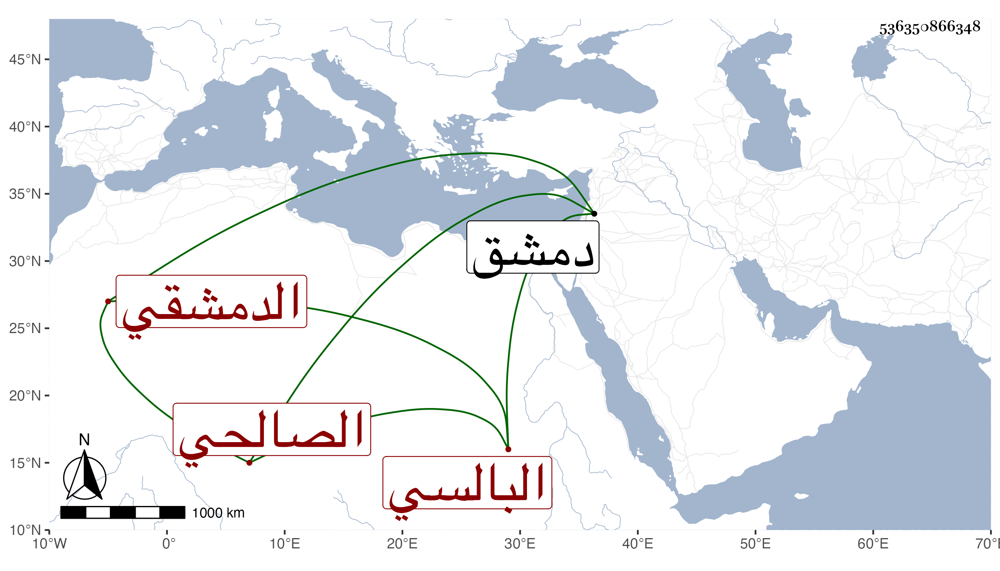

0902Sakhawi.DawLamic.ITO20230111-ara1.EIS1600.536350866348
Biography ID: 536350866348
367
عمر بن محمد بن أحمد بن عمر بن سلمان بن علي بن سالم الزين أبو حفص البالسي ثم الدمشقي الصالحي الملقن أخو عائشة الآتية ويعرف بالبالسي . ولد في ذي الحجة سنة اثنتين وثلاثين وسبعمائة وأحضره أبوه الكثير من أبي محمد بن أبي التائب وغيره وأسمعه على الحافظ المزي والبرزالي والذهبي وزينب ابنة الكمال والطبقة فأكثر جدا وأجاز له أبو الحسن البندنيجي وآخرون ، وكان منزلا في الجهات يلقن القرآن بالجامع الأموي ويمشي بين الطلبة في النزول عن الوظائف دينا خيرا متواضعا محبا في الرواية والطلبة يقوم بأودهم ويوادهم ويدلهم على المشايخ ويفيدهم جهده ، حدث بالكثير قرأ عليه شيخنا فأكثر جدا بل كان يتسمع منه على الشيوخ ولم يكن يضجر من التسميع ، ترجمه بذلك كله شيخنا في معجمه وأنبائه ، وحدثنا عنه خلق ممن تأخر عن شيخنا ، وذكره المقريزي في عقوده . مات في الكائنة العظمى في دمشق في شعبان سنة ثلاث رحمه الله .
